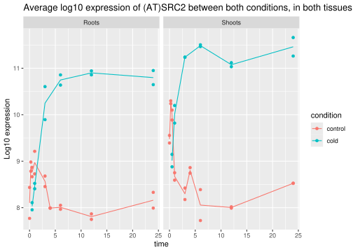
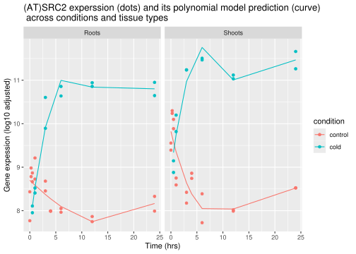
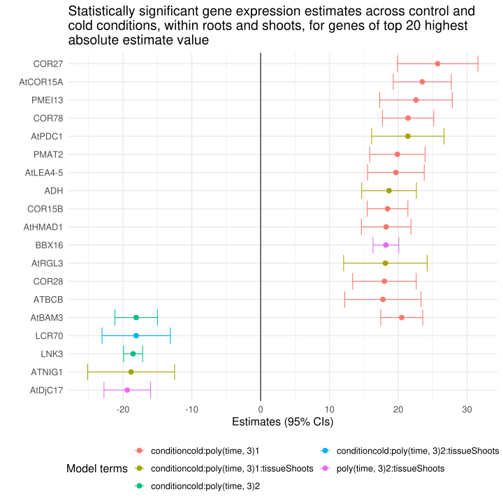

Rows: 633300 Columns: 9
── Column specification ────────────────────────────────────────────────────────
Delimiter: "\t"
chr (7): GSM, title, condition, tissue, timepoint, replicate, gene
dbl (2): expression, average
ℹ Use `spec()` to retrieve the full column specification for this data.
ℹ Specify the column types or set `show_col_types = FALSE` to quiet this message.
Rows: 22810 Columns: 63
── Column specification ────────────────────────────────────────────────────────
Delimiter: "\t"
chr (3): probeid, genename, symbol
dbl (60): GSM131223, GSM131224, GSM131225, GSM131226, GSM131227, GSM131228, ...
ℹ Use `spec()` to retrieve the full column specification for this data.
ℹ Specify the column types or set `show_col_types = FALSE` to quiet this message.
Prepare the data
# set to factors and set levels in the preferred orderdata$gene <-as.factor(data$gene)data$condition <-factor(data$condition,levels =c("control", "cold"))data$tissue <-factor(data$tissue,levels =c("Roots", "Shoots"))data$timepoint <-factor(data$timepoint,levels =c("0h", "0.25h", "0.5h", "1.0h", "3.0h", "4.0h","6.0h", "12.0h", "24.0h"))data$replicate <-as.factor(data$replicate)# remove h in timepoints and convert to numericdata$time <-as.numeric(sub("h", "", data$timepoint))
Small test - applying linear model to one gene (e.g. (AT)SRC2)
Get the data for (AT)SRC2 only
small_test_ATSRC2 <- data |>filter(gene =="(AT)SRC2")small_test_ATSRC2
# A tibble: 60 × 10
GSM title condition tissue timepoint replicate gene expression average
<chr> <chr> <fct> <fct> <fct> <fct> <fct> <dbl> <dbl>
1 GSM131223 AtGe… control Shoots 0h Rep1 (AT)… 9.39 9.47
2 GSM131224 AtGe… control Shoots 0h Rep2 (AT)… 9.55 9.47
3 GSM131225 AtGe… control Roots 0h Rep1 (AT)… 7.77 8.10
4 GSM131226 AtGe… control Roots 0h Rep2 (AT)… 8.43 8.10
5 GSM131227 AtGe… control Shoots 0.25h Rep1 (AT)… 10.2 10.3
6 GSM131228 AtGe… control Shoots 0.25h Rep2 (AT)… 10.3 10.3
7 GSM131229 AtGe… control Roots 0.25h Rep1 (AT)… 8.98 8.88
8 GSM131230 AtGe… control Roots 0.25h Rep2 (AT)… 8.78 8.88
9 GSM131231 AtGe… control Shoots 0.5h Rep1 (AT)… 10.1 9.99
10 GSM131232 AtGe… control Shoots 0.5h Rep2 (AT)… 9.89 9.99
# ℹ 50 more rows
# ℹ 1 more variable: time <dbl>
Plot ATSRC2
ggplot(small_test_ATSRC2, aes(x = time,y = expression,color = condition)) +geom_point() +geom_line(aes(y = average)) +facet_wrap(~tissue) +ggtitle("Average log10 expression of (AT)SRC2 between both conditions, in both tissues") +ylab("Log10 expression")

Apply linear model to (AT)SRC2
# lm for ATSRC2 expression explained by condition, tissue type and timepointmodel_ATSRC2 <- small_test_ATSRC2 |>group_by(condition, tissue, timepoint) |>lm(expression ~ condition * tissue * timepoint, data = _)print("lm() output:")
Call:
lm(formula = expression ~ condition * tissue * timepoint, data = group_by(small_test_ATSRC2,
condition, tissue, timepoint))
Residuals:
Min 1Q Median 3Q Max
-0.35512 -0.08573 0.00000 0.08573 0.35512
Coefficients: (6 not defined because of singularities)
Estimate Std. Error t value Pr(>|t|)
(Intercept) 8.10184 0.14812 54.699 < 2e-16
conditioncold 2.63777 0.20947 12.593 1.66e-13
tissueShoots 1.37108 0.20947 6.546 3.07e-07
timepoint0.25h 0.78084 0.20947 3.728 0.000802
timepoint0.5h 0.66494 0.20947 3.174 0.003459
timepoint1.0h 0.86777 0.20947 4.143 0.000258
timepoint3.0h 0.46492 0.20947 2.220 0.034157
timepoint4.0h -0.11030 0.20947 -0.527 0.602365
timepoint6.0h -0.09408 0.20947 -0.449 0.656575
timepoint12.0h -0.29483 0.20947 -1.407 0.169559
timepoint24.0h 0.05831 0.20947 0.278 0.782619
conditioncold:tissueShoots 0.29875 0.29623 1.008 0.321287
conditioncold:timepoint0.25h NA NA NA NA
conditioncold:timepoint0.5h -3.37427 0.29623 -11.391 2.03e-12
conditioncold:timepoint1.0h -3.14313 0.29623 -10.610 1.13e-11
conditioncold:timepoint3.0h -0.95588 0.29623 -3.227 0.003022
conditioncold:timepoint4.0h NA NA NA NA
conditioncold:timepoint6.0h 0.10124 0.29623 0.342 0.734908
conditioncold:timepoint12.0h 0.45457 0.29623 1.535 0.135385
conditioncold:timepoint24.0h NA NA NA NA
tissueShoots:timepoint0.25h 0.01411 0.29623 0.048 0.962322
tissueShoots:timepoint0.5h -0.14563 0.29623 -0.492 0.626572
tissueShoots:timepoint1.0h -1.66904 0.29623 -5.634 3.89e-06
tissueShoots:timepoint3.0h -1.63953 0.29623 -5.535 5.15e-06
tissueShoots:timepoint4.0h -0.56090 0.29623 -1.893 0.067978
tissueShoots:timepoint6.0h -1.32338 0.29623 -4.467 0.000104
tissueShoots:timepoint12.0h -1.17403 0.29623 -3.963 0.000422
tissueShoots:timepoint24.0h -1.00697 0.29623 -3.399 0.001927
conditioncold:tissueShoots:timepoint0.25h NA NA NA NA
conditioncold:tissueShoots:timepoint0.5h -0.54191 0.41894 -1.294 0.205701
conditioncold:tissueShoots:timepoint1.0h 1.54314 0.41894 3.683 0.000904
conditioncold:tissueShoots:timepoint3.0h 0.95793 0.41894 2.287 0.029451
conditioncold:tissueShoots:timepoint4.0h NA NA NA NA
conditioncold:tissueShoots:timepoint6.0h 0.39144 0.41894 0.934 0.357571
conditioncold:tissueShoots:timepoint12.0h -0.31962 0.41894 -0.763 0.451462
conditioncold:tissueShoots:timepoint24.0h NA NA NA NA
(Intercept) ***
conditioncold ***
tissueShoots ***
timepoint0.25h ***
timepoint0.5h **
timepoint1.0h ***
timepoint3.0h *
timepoint4.0h
timepoint6.0h
timepoint12.0h
timepoint24.0h
conditioncold:tissueShoots
conditioncold:timepoint0.25h
conditioncold:timepoint0.5h ***
conditioncold:timepoint1.0h ***
conditioncold:timepoint3.0h **
conditioncold:timepoint4.0h
conditioncold:timepoint6.0h
conditioncold:timepoint12.0h
conditioncold:timepoint24.0h
tissueShoots:timepoint0.25h
tissueShoots:timepoint0.5h
tissueShoots:timepoint1.0h ***
tissueShoots:timepoint3.0h ***
tissueShoots:timepoint4.0h .
tissueShoots:timepoint6.0h ***
tissueShoots:timepoint12.0h ***
tissueShoots:timepoint24.0h **
conditioncold:tissueShoots:timepoint0.25h
conditioncold:tissueShoots:timepoint0.5h
conditioncold:tissueShoots:timepoint1.0h ***
conditioncold:tissueShoots:timepoint3.0h *
conditioncold:tissueShoots:timepoint4.0h
conditioncold:tissueShoots:timepoint6.0h
conditioncold:tissueShoots:timepoint12.0h
conditioncold:tissueShoots:timepoint24.0h
---
Signif. codes: 0 '***' 0.001 '**' 0.01 '*' 0.05 '.' 0.1 ' ' 1
Residual standard error: 0.2095 on 30 degrees of freedom
Multiple R-squared: 0.9851, Adjusted R-squared: 0.9706
F-statistic: 68.23 on 29 and 30 DF, p-value: < 2.2e-16
At intercept, i.e. control, roots at 0 hrs, (AT)SRC2 expression is statistically significantly different from 0. However, this is not biologically meaningful as gene expression is expected.
There are missing values for the cold condition at timepoints 0 and 0.25 hrs for both roots and shoots. This affects the model and makes it unbalanced and thus some effects are confounded.
Control and cold gene expression is statistically significant (p<0.05), as is root vs shoot tissue gene expression (p<0.05). However, not all timepoints are statistically significantly different. This is for one-way interactions and thus the effects for tissues, timepoints and conditions are pooled.
The three-way interactions give best biologically significant results since each condition is taken into account. However, as some data is missing, some interactions cannot be estimated (hence NA). Only two sets of interactions have p<0.05 and thus gene expression is statistically significantly different. These are control vs cold & root vs shoot at timepoint 1 hr vs 0 hrs. However, this highlights that ANOVA is not suitable for this data. Need to test a time-series model, in order to test whether cold vs control alters the shape of the time curve, within each tissue (root / shoot).
Polynomial time model for (AT)SRC2
Create model
model <-lm(expression ~ condition *poly(time, 3) * tissue, data = small_test_ATSRC2)summary(model)
Polynomial time allows to test whether gene expression changes over time in a smooth way, and whether that curve is different between conditions and tissues.
Since p-value for conditioncold is below 0.05, there is a statistically significant difference between control and cold conditions at time 0 hrs. Since poly(time, 3)1 and 2 are also statistically significant (p<0.05), the gene expression between conditions across time is also different, i.e. there is a curve / pattern to how the gene expression occurs over time. Additionally, since conditioncold:poly(time, 3)1 to 3 are all significant, the two conditions have different curves over time.
Since tissueShoots is significant, there is a difference in gene expressions between roots and shoots at time 0 hrs. However, there is weak evidence that the gene expression dynamics are different in roots and shoots at different timepoints, since poly(time, 3)1:tissueShoots (until poly 3) are not all statistically significant i.e. p-value is not <0.05 for all 3 polynomials.
Since all three-way interaction terms are non-significant (p>0.05), there is no statistically significant interactions between condition x tissue x time. Therefore, while the cold changes the time trend, and shoots vs roots differ slightly in gene expression patterns, the cold condition does not affect shoots differently from roots in terms of time response.
Plot model
small_test_ATSRC2$fitted <-predict(model)plot4 <-ggplot(small_test_ATSRC2, aes(x = time, y = expression, color = condition)) +geom_point() +geom_line(aes(y = fitted)) +facet_wrap(~ tissue) +ylab("Gene expession (log10 adjusted)") +xlab("Time (hrs)") +ggtitle("(AT)SRC2 experssion (dots) and its polynomial model prediction (curve)\n across conditions and tissue types")plot4

Applying polynomial model to all genes via nested application of lm()
Create nested dataframe
nested_data <- data |>group_by(gene) |>nest() |>ungroup()nested_data
There are 9980 entries to be plotted. That’s too many for a Forest plot. Better investigate heatmaps, PCA or just plot top 20 in terms of absolute estimate.
Try plotting p<0.01 to see if there are less genes and plot is more interpretable
# choose top 20 terms by absolute effect size i.e. not top 20 genes, but 20 coefficients# this allows to find which model terms have the strongest effects across all genestopN <-20forest_plot_top20 <- data_estimates |>filter(is_significant =="yes") |>slice_max(order_by =abs(estimate), n = topN) |>ggplot(aes(x = estimate,y =fct_reorder(gene, estimate),xmin = conf.low,xmax = conf.high,colour = term )) +geom_vline(xintercept =0) +geom_errorbar(orientation ="y") +geom_point(size =3) +theme_minimal(base_size =16) +theme(legend.position="bottom")+guides(colour =guide_legend(ncol =2)) +labs(x ="Estimates (95% CIs)",y ="",title ="Statistically significant gene expression estimates across control and \ncold conditions, within roots and shoots, for genes of top 20 highest \nabsolute estimate value",colour ="Model terms") forest_plot_top20

Most of the genes with the greatest estimate effect shows the gene is upregulated with time in the cold condition (conditioncold:poly(time, 3)1).
Plot all genes for cold × time × tissue interaction (i.e. limit the allowed coefficients)
# choose the three way interaction cold_time_tissue <- data_estimates |>filter(str_detect(term, "conditioncold:poly\\(time, 3\\).*:tissue")) # * refers to 1, 2 and 3 polynomials# filter only the statistically significant onescold_time_tissue_sig <- cold_time_tissue |>filter(is_significant =="yes")
Many genes! most common colour is that for conditioncold:poly(time, 3)1:tissueShoots so it is most commonly a statistically significant term in the model.
Find genes affected the most by the cold × time × tissue interaction
forest_plot_top20_interaction <- cold_time_tissue_sig |>slice_max(order_by =abs(estimate), n =20)forest_plot_top20_interaction
# A tibble: 20 × 4
gene genename estimate term
<chr> <chr> <dbl> <chr>
1 ATNIG1 Calcium-binding transcription factor involved in salt… -18.8 cond…
2 LCR70 Predicted to encode a PR (pathogenesis-related) prote… -18.1 cond…
3 PMAT2 <NA> -17.4 cond…
4 ATGPT2 glucose6-Phosphate/phosphate transporter 2 -17.2 cond…
5 LTP Predicted to encode a PR (pathogenesis-related) prote… -17.1 cond…
6 BBX16 <NA> -16.4 cond…
7 ATFRO6 Encodes a plasma membrane-located ferric chelate redu… -16.0 cond…
8 AtBAM3 Encodes a beta-amylase targeted to the chloroplast. T… -15.7 cond…
9 CBP60G Encodes a calmodulin-binding protein CBP60g (calmodul… -15.6 cond…
10 GBSS1 <NA> -15.3 cond…
11 TN8 <NA> -14.7 cond…
12 SAUR72 <NA> 14.7 cond…
13 AtRbcX1 <NA> 14.8 cond…
14 atnudt8 <NA> 15.3 cond…
15 BBX11 <NA> 15.4 cond…
16 LTI30 Belongs to the dehydrin protein family, which contain… 16.5 cond…
17 ATGPT2 glucose6-Phosphate/phosphate transporter 2 17.4 cond…
18 AtRGL3 DELLA subfamily member involved in GA signal transduc… 18.1 cond…
19 ADH Catalyzes the reduction of acetaldehyde using NADH as… 18.7 cond…
20 AtPDC1 <NA> 21.4 cond…
Some of these genes are known to be related to cold or other stresses! For example, LTI30 gene is overexpressed and it is annotated as related to freeze tolerance.
ATGPT2 is greatly upregulated according to conditioncold:poly(time, 3)1:tissueShoots model term, but greatly downregulated according to conditioncold:poly(time, 3)2:tissueShoots model term. This can be explained by the fact that ATGPT2 might be upregulated at some times (driven by the positive first-basis effect) but downregulated at other times (driven by the negative second-basis effect).
Plot predicted trajectories for ATGPT2 using the model
# extract the model and original data for that geneATGPT2_model <- (nested_data |>filter(gene =="ATGPT2") |>pull(model_object))[[1]]ATGPT2_data <- (nested_data |>filter(gene =="ATGPT2") |>pull(data))[[1]]# create time grid within observed range (0 to 24 hrs) for the polynomial model to fit the polynomial time up to ^3time_grid <-tibble(time =seq(min(ATGPT2_data$time, na.rm =TRUE),max(ATGPT2_data$time, na.rm =TRUE),length.out =200))# newdata grid for predictions: both conditions and tissuesnewdata <- time_grid |>crossing(condition =unique(ATGPT2_data$condition), # cross condition (cold and control) against tissue (root and shoot) to create a matrixtissue =unique(ATGPT2_data$tissue))# predict with se.fit to get CIspred <-predict(ATGPT2_model, newdata = newdata, se.fit =TRUE)newdata <- newdata |>mutate(fit = pred$fit,se = pred$se.fit,lower = fit -1.96* se,upper = fit +1.96* se)
model_pred_experssion_ATGPT2 <-ggplot(newdata, aes(x = time, y = fit, color = condition)) +geom_line(size =1) +geom_ribbon(aes(ymin = lower, ymax = upper, fill = condition), alpha =0.15, color =NA) +facet_wrap(~ tissue) +labs(title =str_c("(AT)GPT2: model predicted expression over time (Shaded = 95% CI)"),y ="Predicted expression", x ="Time") +theme_minimal(base_size =14)
Warning: Using `size` aesthetic for lines was deprecated in ggplot2 3.4.0.
ℹ Please use `linewidth` instead.
So, it is not weird that ATGPT2 has both a large positive and negative estimate for the two polynomial times - the expression pattern is essentially opposite in shoots under cold and control conditions. There is very little difference in the gene expression over time in roots between conditions, however.
Look for all genes involved in cold and/or stress according to gene annotations
key_words <-c("cold", "stress")# use OR logiccold_or_stress <- expr_annotated_gene_info |>filter(str_detect(genename, str_c(key_words, collapse ="|")))cold_or_stress
# A tibble: 294 × 2
genename gene
<chr> <chr>
1 bZIP17 appears to regulate transcription as part of a salt and osmotic… BZIP…
2 Encodes a protein with cysteine proteinase inhibitor activity. Overexp… ATCY…
3 A novel protein with a RING finger motif near the amino terminus. Nega… ESD6
4 Encodes a protein disulfide isomerase-like (PDIL) protein, a member of… ATPD…
5 Encodes a medium to long-chain acyl-CoA oxidase. Catalyzes the first s… ACX1
6 Member of AtCBL (Calcineurin B-like Calcium Sensor Proteins) family. P… ATCB…
7 The VERNALIZATION2 (VRN2) gene mediates vernalization and encodes a nu… VRN2
8 Encodes a cytosolic isoform of cytosolic O-acetylserine(thiol)lyase, a… ATCY…
9 Homologous to pea OEP16 and barley pPORA (OEP16), a member of Arabidop… ATOE…
10 Encodes a beta-amylase targeted to the chloroplast. Transgenic BMY8 RN… AtBA…
# ℹ 284 more rows
There are 294 genes that are annotated with words “cold” or “stress”.
# use AND logiccold_and_stress <- expr_annotated_gene_info |>filter(map_lgl(genename, ~all(str_detect(.x, key_words)))) cold_and_stress
# A tibble: 32 × 2
genename gene
<chr> <chr>
1 Encodes a protein with cysteine proteinase inhibitor activity. Overexp… ATCY…
2 A novel protein with a RING finger motif near the amino terminus. Nega… ESD6
3 Member of AtCBL (Calcineurin B-like Calcium Sensor Proteins) family. P… ATCB…
4 Encodes a WD-40 protein involved in histone deacetylation in response … HOS15
5 Encodes a bifunctional protein that has 3'(2'),5'-bisphosphate nucleot… ALX8
6 A member of Arabidopsis BAG (Bcl-2-associated athanogene) proteins, pl… ATBA…
7 Encodes one of five HVA22 homologs in Arabidopsis. HVA22 is an ABA- a… ATHV…
8 Encodes a protein with 40% similarity to calmodulin. Binds Ca(2+) and,… AtCM…
9 Similar in sequence to DEAD-box RNA helicases. Binds RNA. Involved in … ATRH…
10 Encodes a mitogen-activated kinase whose mRNA levels increase in respo… ATMA…
# ℹ 22 more rows
32 genes that are annotated mentioning “cold” and “stress”.
# find the namescold_and_stress_gene_names <- cold_and_stress$gene
# plot model results as Forest plot for these 32 genesforest_cold_and_stress_plot <- data_estimates |>filter(is_significant =="yes") |>filter(gene %in% cold_and_stress_gene_names) |>ggplot(aes(x = estimate,y =fct_reorder(gene, estimate),xmin = conf.low,xmax = conf.high,colour = term)) +geom_vline(xintercept =0) +geom_errorbar(orientation ="y") +geom_point(size =3) +theme_minimal(base_size =17) +theme(legend.position="bottom") +guides(colour =guide_legend(ncol =3)) +labs(x ="Estimates (95% CIs)",y ="",colour ="Model term",title ="Statistically significant gene expression estimates across control and cold condtions, \nwithin roots and shoots, for known cold and stress annotated genes")forest_cold_and_stress_plot
Some genes have multiple data entries for estimates. This is due to the model having up to three way interactions. All of these genes have statistically significantly different gene expression across tissues, however the estimate effect is among smallest. Some terms including poly(time, 3) have both positive and negative estimate effects. This is normal since the polynomial time terms assume linear, squared or cubic gene expression i.e. genes could be down or upregulated across time.
Compare the genes annotated as cold or stress with genes found by the model
Are all the genes found via annotations statistically significantly up- or down-regulated according to the model?
# annotated gene namesprint(str_c("Annotated genes have ", length(cold_and_stress_gene_names), " entries"))
[1] "Annotated genes have 32 entries"
# model significant gene namesmodel_gene_names_df <- data_estimates |>filter(is_significant =="yes") |> dplyr::select(gene)model_gene_names <-as.character(unique(model_gene_names_df$gene))print(str_c("Model genes have ", length(model_gene_names), " entries"))
[1] "Model genes have 7623 entries"
print("Annotated gene names that are present in the model are:")
[1] "Annotated gene names that are present in the model are:"
Warning: There were 2 warnings in `filter()`.
The first warning was:
ℹ In argument: `gene == absent_genes`.
Caused by warning in `==.default`:
! longer object length is not a multiple of shorter object length
ℹ Run `dplyr::last_dplyr_warnings()` to see the 1 remaining warning.
absent_genes_significance
# A tibble: 9 × 8
gene term estimate p.value conf.low conf.high q.value is_significant
<fct> <chr> <dbl> <dbl> <dbl> <dbl> <dbl> <chr>
1 ALX8 tissueShoo… 0.262 6.69e-4 0.118 0.407 1 no
2 ALX8 poly(time,… 0.138 8.03e-1 -0.969 1.24 1 no
3 AtCML24 poly(time,… -1.84 2.32e-2 -3.41 -0.263 1 no
4 AtCML24 poly(time,… 3.29 6.71e-3 0.960 5.62 1 no
5 ATDDF1 conditionc… 0.108 7.46e-1 -0.561 0.778 1 no
6 ATDDF1 conditionc… 9.65 6.02e-4 4.39 14.9 1 no
7 ATDDF1 conditionc… 5.21 1.65e-1 -2.23 12.6 1 no
8 MYB8 poly(time,… 0.694 5.07e-1 -1.40 2.79 1 no
9 MYB8 conditionc… -1.12 3.52e-4 -1.70 -0.536 1 no
Four out of seven genes are found in the data estimates dataframe and are not statistically significant. However, some genes are missing from the dataframe.
print("genes missing from originally loaded dataframe are:")
[1] "genes missing from originally loaded dataframe are:"
These three genes are missing from cleaned dataset due to their low variance. See 02_clean section 4. Thus, they are also not significantly up- or down-regulated.